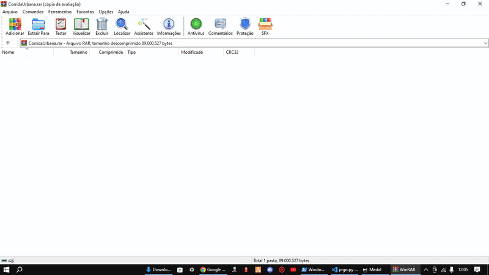

Estudante de Análise e Desenvolvimento de Sistemas (3º semestre) | Desenvolvimento Web e Python
Sou estudante de Análise e Desenvolvimento de Sistemas (3º semestre) e trago comigo uma bagagem de mais de 10 anos na bancada, resolvendo problemas reais de hardware e software.
Essa experiênia me deu uma visão prática: foco no que funciona. Hoje, aplico essa lógica no desenvolvimento web, usando Python, JavaScript e ferramentas de IA para acelerar a entrega de soluções que realmente resolvem a vida do usuário.
Tecnologias: Java, POO (Programação Orientada a Objetos)
Um jogo de corrida 2D desafiador desenvolvido para aplicar conceitos avançados de lógica e estruturas de dados. O objetivo é sobreviver ao trânsito urbano desviando de obstáculos em alta velocidade.

Tecnologias: HTML5, Tailwind CSS, JavaScript, WhatsApp API
Plataforma web para gestão de assistência técnica no modelo Delivery ("Uber dos Consertos"). Focada em conversão de serviços premium, como o Housing Swap (Transformação de iPhone) e logística de retirada/entrega.
Tecnologias: HTML, CSS, JavaScript
Projeto focado em manipulação de DOM, eventos JavaScript e estilização avançada com CSS, explorando conceitos de usabilidade e interação com o usuário.
Ensino Superior (Cursando 3º Semestre) | Universidade Anhanguera
Foco em Engenharia de Software, Lógica de Algoritmos (Python/C) e Desenvolvimento Web.
SILVA, Fernando V. da; SANTANA, Sophia Isabel C. de. Análise Comparativa de Desempenho Computacional entre Algoritmos Iterativos e Recursivos em Ambiente de Nuvem. Orientador: Eduardo F. Miranda. Zenodo, 2026. DOI: 10.5281/zenodo.19886106.
Acessar Artigo (Recursividade)SILVA, Fernando V. da; MIRANDA, Eduardo F. Análise Empírica de Desempenho em Transações de Banco de Dados: um benchmarking entre inserções sequenciais e em lote utilizando SQLite3. Zenodo, 2026. DOI: 10.5281/zenodo.19818972.
Acessar Artigo (Benchmarks SQL)Formação Prática e Técnica
Mais de 10 anos de experiência em diagnóstico de circuitos, manutenção de software e gestão de sistemas operacionais móveis.